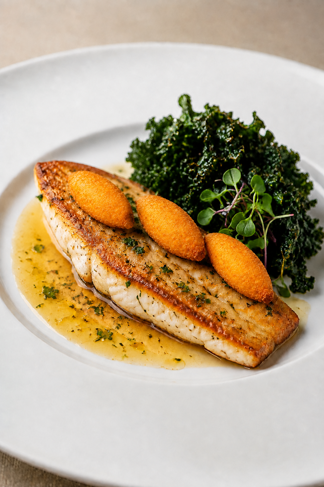
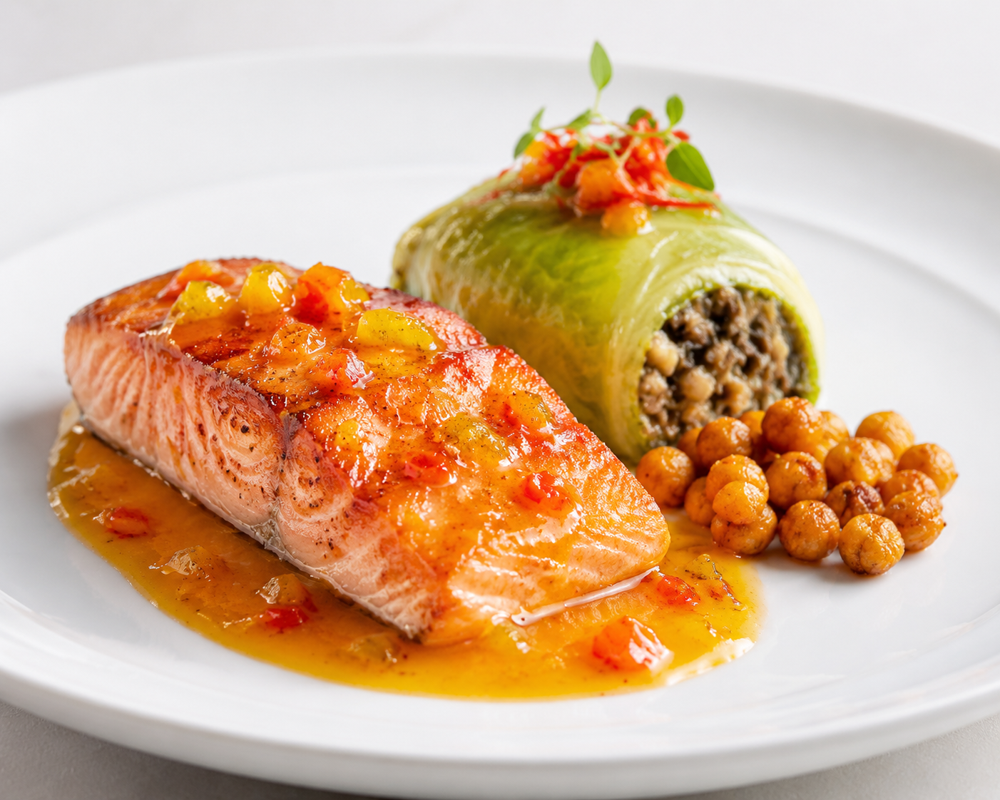

Servicio a las 9:00 a. m.Todo se adelanta antes del pescado. Las dos cocciones principales se realizan al final.
Progreso general0 de 21 tareas · 0%
Etapa actual: 1. Mise en place de las dos recetas
Regla de corte: cebolla, champiñón y tocineta de la duxelle van en brunoise uniforme.
Ultracongelador disponible: las quenelles requieren solo 8–10 minutos de reserva en frío, hasta afirmar la superficie. No deben congelarse por completo.
Bocetos de emplatado
Referencia visual de los dos platosUsar como guía para conservar altura, equilibrio y limpieza durante el montaje final.


Para GitHub Pages, este HTML y las dos imágenes deben permanecer en la misma carpeta.
Mariana
Juan Daniel
Santiago
Ingredientes y paso a pasoCantidades de las fichas de clase; croquetas adaptadas al video enlazado.